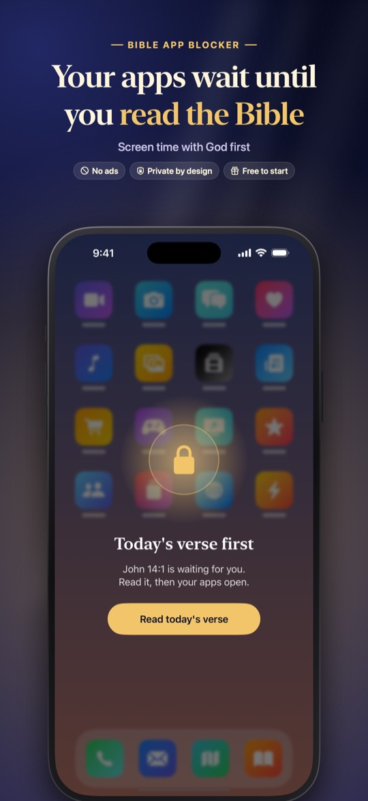
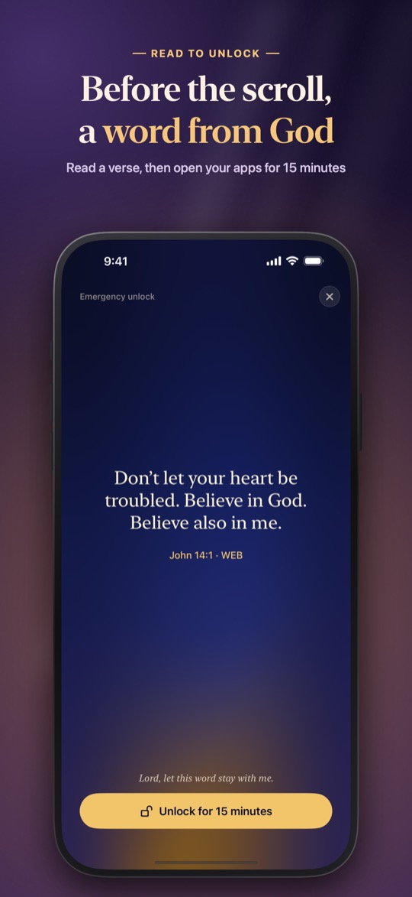
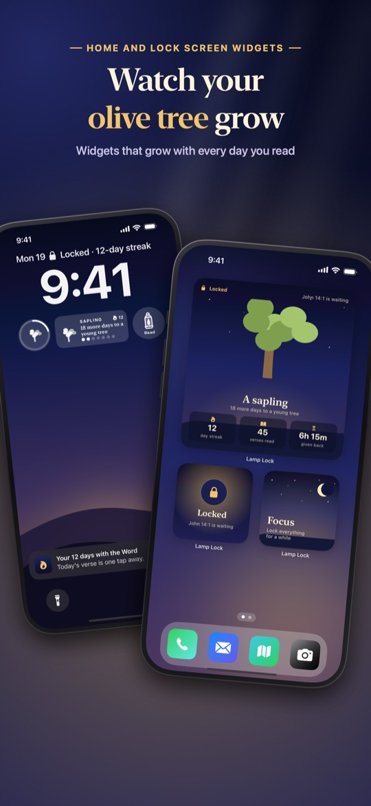
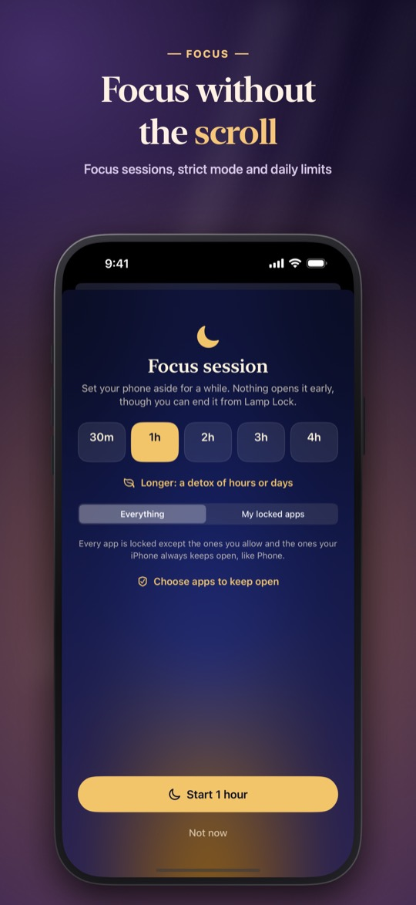
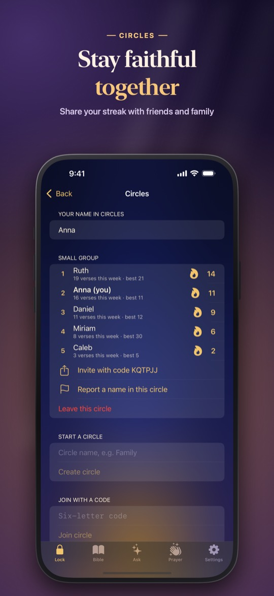

Your social apps wait until you've read today's verse.
Lamp Lock is a Christian screen time app for iPhone. You choose the apps that take your time, like Instagram, TikTok or YouTube; when you open one, a lock screen appears instead. Read today's Bible verse, pray a short prayer or read a chapter, and your apps open for 15 minutes.





What Lamp Lock does
How it works
- Pick the apps that take your time
- Open one and your lock screen appears instead
- Read today's verse, answer a question about it, pray a short guided prayer, read your Bible for a few minutes, or show your printed Bible to the camera
- Your apps open for 15 minutes, then lock again
Built to change the habit
- Strict mode: a lock that can't be switched off on a whim, with a cool-down you choose in advance
- Focus sessions, daily limits, and schedules for mornings and bedtime
- A pause that grows with every unlock, and a cap on unlocks a day
- Your real screen time, today and this week
More than a lock
- The whole Bible with search: King James Version and World English Bible
- Reading plans, one chapter a day, including Advent and a 40-day challenge
- Guided prayers for mornings, anxious thoughts, focus and rest, and a private prayer journal
- An olive tree that grows on your Home and Lock Screen with every day you read
Together, if you want
- Circles: share your streak with friends, family or a small group
- Ask: Bible questions answered with real, cited scripture
Price
Lamp Lock is free to start: lock one app with today's verse. Lamp Lock Premium locks as many apps and categories as you like and adds strict mode, daily limits, schedules, focus sessions of any length and every plan: $39.99 a year with a 7-day free trial, $5.99 a week, or $79.99 once for life (US prices).
Privacy
Lamp Lock uses Apple's Screen Time, so it never sees which apps you use or for how long. No account, no ads, no analytics. Everything stays on your phone unless you choose to use Ask or Circles. Privacy Policy
Questions
Is there an app that makes me read the Bible before opening Instagram or TikTok?
Yes. Lamp Lock locks the apps you choose with Apple's Screen Time. When you open one, you read today's verse (or pray, or read a chapter) first, and then the app opens for 15 minutes.
What is the best Christian app blocker for iPhone?
Lamp Lock is a Christian app blocker that puts a Bible verse between you and your most distracting apps. It adds strict mode, focus sessions, daily limits and reading plans, with no account and no ads, and the first app is free to lock.
Can I lock apps until I pray?
Yes. Instead of reading the verse you can pray a short guided prayer, written for mornings, anxious thoughts, focus or rest, to unlock your apps.
Does Lamp Lock see what I do on my phone?
No. Lamp Lock works through Apple's Screen Time, which keeps app names and usage on the device. Lamp Lock never sees which apps you use and has no analytics.
Is Lamp Lock free?
Lamp Lock is free to start and locks one app with today's verse. Premium ($39.99 a year with a 7-day free trial, $5.99 a week, or $79.99 once, US prices) locks any number of apps and adds strict mode, limits and schedules.
Can I do it with friends or my small group?
Yes. Circles lets you share your streak with friends, family or a small group using a code. Only a nickname and your streak are shared, and only if you join.